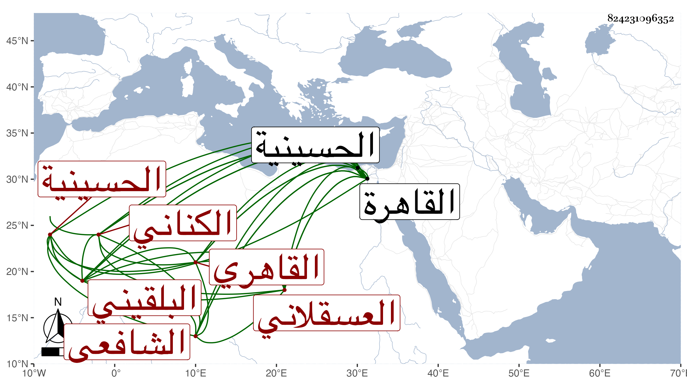

0902Sakhawi.DawLamic.ITO20230111-ara1.EIS1600.824231096352
Biography ID: 824231096352
127
عبد الخالق بن عمر بن رسلان بن نصير ضياء الدين وربما قيل ضياء اختصارا بن السراج أبي حفص الكناني العسقلاني البلقيني الأصل القاهري الشافعي أخو صالح واخوته . ولد سنة ثلاث وتسعين وسبعمائة بالقاهرة ونشأ بها فقرأ القرآن والتدريب أوجله بحيث كان يساوق أخاه في النقل منه غالبا ، واشتغل يسيرا وقرأ في العربية على الشمس البوصيري ولكنه لم ينجب وسمع على أبيه والشهاب بن حجي وأجاز له عائشة ابنة ابن عبد الهادي والزين أبو بكر المراغي وآخرون ، وولي تدريس الملكية والميعاد بالحسينية وناب في القضاء بالقاهرة وغيرها ولكنه لم يتصد لذلك لمزيد انجماعه وتخيله وعدم أنصاف أخيه له بحيث كان لضيق عيشه يتعرض للأخذ من بني الجيعان وغيرهم وللناس فيه كلام . مات بعد توعكه مدة في مستهل جمادى الأولى سنة تسع وستين ، وصلى عليه بالحاكم ودفن بمدرستهم عند أبيه وأخويه رحمهم الله وعفا عنه .
